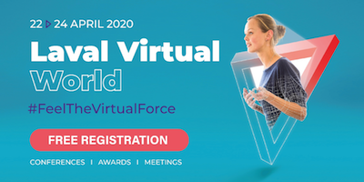

Only virtual meetings this month following @w3c's team travel policy and guidance to not hold in-person meetings of W3C groups https://www.w3.org/Guide/meetings/continuity.html
https://twitter.com/w3c/status/1244683814988898309
🗓️ April@VirtualW3C: remote meetings and meetup -
https://www.w3.org/participate/eventscal.html
https://twitter.com/w3cdevs/status/12453223001588695071-2 April: continued @w3cpayments virtual meeting https://github.com/w3c/webpayments/wiki/FTF-Mar2020 #payments
https://twitter.com/w3cdevs/status/124532230319964160527-29 April: The @csswg meets virtually to discuss the 2020 #CSS snapshot
https://wiki.csswg.org/planning#upcoming-meetings
22 April: @dontcallmeDOM presents "The Immersive Web: Web browsers as platform for #XR experiences" at @lavalvirtual, a #virtual and #free event. Free registration! https://www.laval-virtual.com/home/
https://twitter.com/w3cdevs/status/12453223070626324489 April: second edition of @samsunginternet Virtual Office Hours #meetup with guest @dontcallmeDOM presenting what's new in Web #standards and what the devrel team is doing to engage #developers around the world. Join us! https://www.meetup.com/Samsung-Internet-Meetup/events/269764485
7 April: Today! Starting a new session of @w3c's #HTML5 and #CSS Fundamentals #MOOC on @w3cx @edXOnline https://cards.twitter.com/cards/18ce53z7ril/7fw8e
https://twitter.com/w3cdevs/status/1245322305099702274It would standardize the work started in @wicg_ on the #WebTransport #API - which exposes network capabilities provided by new protocols like #QUIC
https://wicg.github.io/web-transport/
A brand new @w3c WebTransport #WorkingGroup is under
consideration:
https://twitter.com/w3c/status/1245203783321366528
https://twitter.com/w3cdevs/status/1247493707131162626#WebTransport is expected to provide particular benefits to latency-sensitive network services, like #games or #LiveStreaming
https://github.com/WICG/web-transport/blob/master/explainer.md#problem-and-motivation
https://twitter.com/w3cdevs/status/1247493712361512960#QUIC is a UDP-based #protocol in development in @IETF which will serve as the basis for #HTTP3 and thus likely gain very wide adoption on the server side. #WebTransport aims to provide a #WebSockets equivalent to server endpoints.
https://en.wikipedia.org/wiki/QUIC
https://twitter.com/w3cdevs/status/1247493710155337730The @w3c Web Transport #WorkingGroup would work in close cooperation with its sister group @ietf which had their first virtual meeting a few days ago:
https://www.ietf.org/live/ietf107-webtrans/
https://twitter.com/w3cdevs/status/1247493714773266434The charter for this would-be @w3c working group is available on #github for comments:
https://github.com/w3c/webtransport-charter
https://twitter.com/w3cdevs/status/1247493716929064961The @w3c Linked Data Notifications #WebStandard has been translated into Japanese: http://www.asahi-net.or.jp/~ax2s-kmtn/internet/link/REC-ldn-20170502.html Thank you @omnidirect ! #html5j #dotHTML5 #w3c_keio #translation https://twitter.com/omnidirect/status/1247141952450990081
https://twitter.com/w3cdevs/status/1247494746186096641Mark your calendar and "see" you there! https://twitter.com/samsunginternet/status/1247470927002120192
https://twitter.com/w3cdevs/status/1247871257825226752Congrats to editors Matthias Kovatsch, Ryuichi Matsukura, Michael Lagally, Toru Kawaguchi, @ktoumura, Kazuo Kajimoto, @sebastiankbs1, @michaelmccool, Takuki Kamiya, Victor Charpenay, and the @wot for these 2 #WebStandards! #IoT #WoT
#timetoadopt https://twitter.com/w3c/status/1248249525870792721
https://twitter.com/w3cdevs/status/1248259096761044992New to #ImmersiveWeb? Listen to @dontcallmeDOM's intro to #XR experiences on Web #browsers, tomorrow 22 April at 10am CET #LavalVirtualWorld #WebXR.
#free registration: https://www.laval-virtual.com/ticketing/
https://twitter.com/lavalvirtual/status/1252203262272512001
https://twitter.com/w3cdevs/status/1252509694247219200